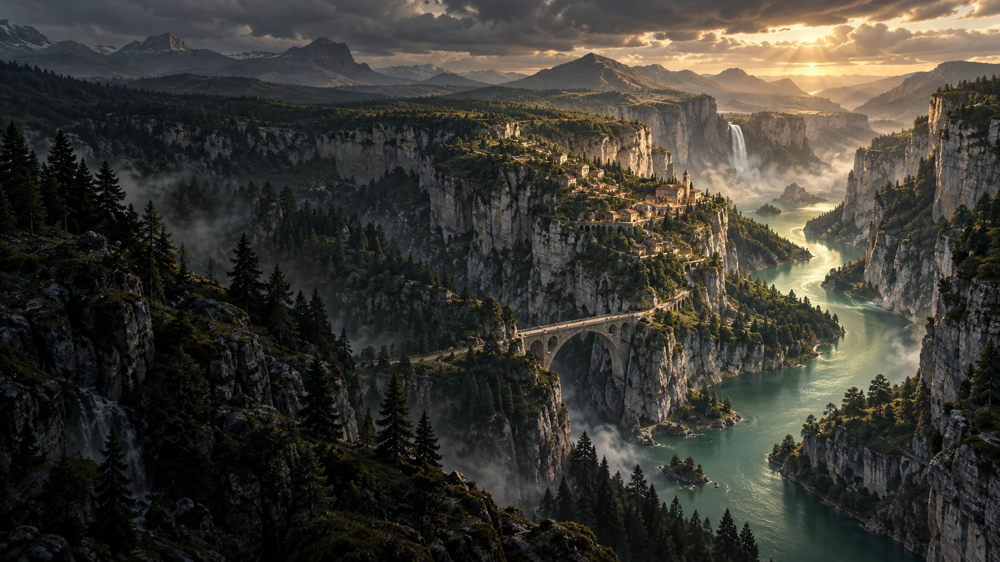
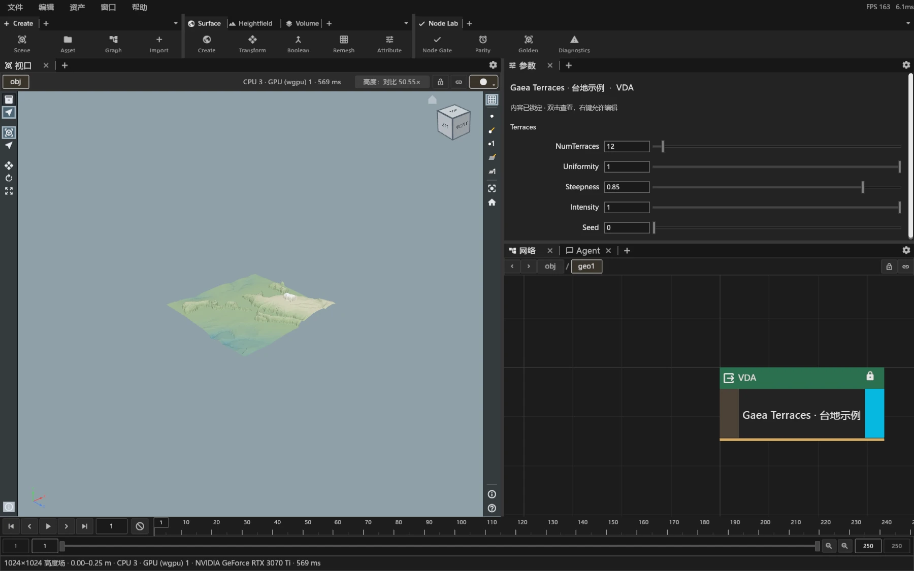

A WORLD OF YOUR MAKING.
世界，
由你创造。
以 Agent 为中心的世界创作工具。
从一个想法出发，塑造一个可以持续演进的世界。
01 / THE RIFT VALLEY
山川之间，
世界开始有了故事。
01THE VISION
把想象中的地方，
变成可以创造的世界。
地形是起点。道路连接聚落，建筑回应场所，生态沿水系与气候展开。Vesta 的愿景，是让 Agent 与程序化工具共同理解、塑造和迭代这些关系。
连接生活的尺度。
地形、道路、街区与建筑
愿景概念 · 领域能力逐步建设让自然彼此关联。
水系、生物群落与生态系统
愿景概念 · 完整生态创作尚未实现从地貌到环境，从单个资产到连贯世界。
TERRAIN → ENVIRONMENTS → WORLDS
02REAL OUTPUT. REAL POSSIBILITIES.
先让一片地形，
有自己的性格。
下面是 Vesta 已有高度场结果的展示短片。
从连续山脊，到层叠岩台，
每一种形态都来自可复用的程序化过程。
VESTA / RESULT STUDY 001
SHAPE / 形态
相同的起点，不同的表达。
Ridge → Terraces
真实样本 · 展示渲染
塑造连绵的山脊。
刻出层叠的岩台。
基于 Vesta CLI 真实输出的 512² 地形；动画仅改变展示相机。
查看展示说明
这些是已计算高度场的可视化短片，不是实时生成速度、侵蚀演化过程或 Builder 界面录屏。两组样本使用相同显示起伏，源高度未改动。 样本来源记录 ↗
03FROM ASSET TO ENGINE
在 Unreal 中，
继续创造。
Vesta Digital Asset 把程序化资产定义与公开参数带进 Unreal Engine。导入 VDA，在引擎里调整参数，通过 Vesta 插件求值并查看地形结果。
调整公开参数。
在 Unreal 中查看地形。
当前已验证 VDA 导入、参数覆盖和 Heightfield 执行切片；部分地形算子使用 UE RHI GPU。这不代表所有数据类型、GPU 算子或生产交付流程均已完成。
04AN AGENT AT THE HEART OF CREATION
你负责想象。
让 Agent 参与创造。
Vesta 正在构建以 Agent 为中心的 World Builder：围绕你的意图提出计划、调用工具、观察结果，再一起修正。专业编辑能力融入同一个创作环境，随时允许人工接管。
说出你想去的地方。
把环境、气氛与约束，变成清晰的创作方向。
让意图接上工具。
Agent 通过受控工具使用当前已实现的计算与资产能力。
看见，然后继续雕琢。
修改参数、检查过程、调整局部，让世界持续演进。
ONE CREATIVE ENVIRONMENT
World Builder以 Agent 为中心的创作环境
世界上下文留在 Builder；会话、模型与历史由连接的 Agent 持有。当前已接通 Vesta Agent，其他 Agent 通过适配器逐步接入。
创作意图世界预览程序化工具人工编辑
AGENT协作的中心
Studio 是当前节点、VDA 与地形能力的承载前端。未来这些能力将逐步迁入 World Builder，由 Builder 取代 Studio，形成统一的 Agent 中心创作工具。
想象可以自由。
过程仍然可控。
Agent 推进工作，程序化过程保留结构。
你可以查看、修改、撤销，并把有效的过程留下来，
用于下一个场景、下一次创作。

展示已有节点与 VDA 能力，不代表未来 Builder 的最终界面。
05A WORLD IN PROGRESS
愿景很远。
从真实的进展出发。
Vesta 处于技术预览开发阶段。
当前先打磨地形与创作底座，
再逐步拓展世界的规模和复杂度。
可以看见的起点。
- Graph / VDA 与 CLI 执行链
- 地形参数与结果预览
- 部分地形算子的 CPU / GPU 实现
- Unreal 高度场执行
- Builder 与 Vesta Agent 真实连接
连续的创作体验。
- 以 Agent 为中心的 Builder 工作流
- 现有创作能力向 Builder 汇聚
- 交互、算子与结果一致性
- 更多 Agent 连接适配
彼此关联的世界。
- 地形、道路、建筑与生态组合
- 围绕目标的计划、评价与修复
- 可复用资产与持续世界迭代
- 角色与动画的后续扩展
- 更完整的引擎交付流程
状态基准：2026.10.16。已有切片不代表完整产品或生产交付流程已经验收。